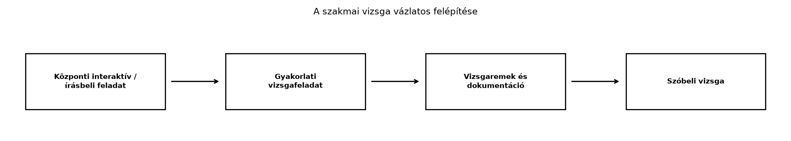

Képzeld el, hogy a szakmai vizsgán az írásbeli vagy interaktív feladatlap előtted fekszik. A tanár azt mondja: „A feladat megoldására 60–90 perc áll rendelkezésre.” A lapon egyszerre van anyagismereti kérdés, nedvességszámítás, szakrajz, gépbeállítás, felületkezelési anyagszükséglet és egy kis árkalkuláció. Ha addig csak fejezetenként külön-külön gyakoroltál, a vizsgán először szembesülsz azzal, hogy a témákat váltogatni kell, és az időt magadnak kell beosztani. Ezt lehet begyakorolni. Ebben az alfejezetben előbb áttekintjük a vizsga szerkezetét, majd egy vegyes mintafeladatsort oldunk meg lépésről lépésre. Így a tudásodat és az időgazdálkodásodat együtt edzed.
Ülsz a tanműhelyben vagy a vizsgahelyszínen. Az asztalon számológép, ceruza, derékszögelő, vonalzó és a feladatsor. A feladatsor elején rövid utasítás: „A számításoknál minden lépést írjon le, mértékegységgel. A rajzot az európai vetítési rendben készítse. A pontozás a részpontok szerint történik.” A lapon például ilyen feladatok állhatnak:
Ezeket most együtt felépítjük. A vizsgán a teljes tudásod nem egyszerre, hanem kis feladatokban, gyakorlati helyzetbe ágyazva jelenik meg.
Az alábbi leírás a szokásos szerkezetet mutatja be. A pontos vizsgarészek, időtartamok és pontozás a hatályos vizsgaszabályzattól és a szakmai követelményektől függenek, ezért ezeket mindig ellenőrizni kell a vizsga előtt.
Régi képzési dokumentumokon: a 34 543 02 Asztalos OKJ-s képzés vizsgája írásbeli, gyakorlati és szóbeli részből állt; a régi feladatsorokban ilyen címeket találsz. A mai rendszerben a fogalmak részben megváltoztak.
A Szakképzés 4.0 szerinti szakmai vizsga a képzési és kimeneti követelmények (KKK) és a programkövetelmény szerint jellemzően írásbeli/interaktív vizsgarészből és projektfeladatból (gyakorlati vizsgarész, dokumentációval) áll; az alábbi négy rész a régi és az új rendszer szokásos elemeit együtt mutatja, a mostani vizsga felépítése így tagolódhat (ellenőrizendő: aktuális szabályzat):
Ezt a felépítést mutatja az alábbi folyamatábra.

Szabály. A vizsgán csak a szabályzatban megengedett segédeszközöket használhatod. A számológép, vonalzó, derékszögelő és a feladatlap által megengedett szabványkivonat általában megengedett. A mobiltelefon, saját képletgyűjtemény vagy előre megírt tétel nem használható, hacsak a szabályzat kifejezetten nem engedi.
A vizsga előtti hetekben használd ezt a számozott gyakorlóeljárást. Minden gyakorlásnál tartsd be a lépéseket.
Ezt az eljárást most kipróbáljuk egy kidolgozott mintafeladatsoron.
A vizsgán az anyagismeret és a faipari számítások gyakran kapcsolódnak össze. A három leggyakoribb feladattípus a nedvességtartalom, a zsugorodás és a köbözés. Ezek a A faanyag nedvességtartalma: mérés és számítás, a Zsugorodás, dagadás és vetemedés: a fa „mozgása” és a Szabásjegyzék és anyagnorma alfejezetekből ismertek.
1. Kidolgozott példa (nedvességtartalom). Egy tölgy mintadarab nedves tömege . Kiszárítás után az abszolút száraz tömeg . Mennyi a faanyag nedvességtartalma?
Számítás. A nedvességtartalom képlete:
Behelyettesítve:
A faanyag nedvességtartalma kb. 10,3 %. Ez a bútoripari felhasználás szokásos célértéke (tájékoztató, 8–12 % közötti célérték, a gyártási körülményektől függ).
2. Kidolgozott példa (zsugorodás). Egy bükk deszka szélessége 12 % nedvességen 200 mm. Mennyi lesz a szélessége 8 % nedvességen, ha a húrirányú differenciális zsugorodást 0,25 %/% értékkel vesszük figyelembe? (Tájékoztató érték, faanyagtáblázatból ellenőrizendő.)
Számítás. A nedvességváltozás:
A szélességváltozás közelítő képlete:
ahol a differenciális zsugorodás, tizedes alakban -os relatív csökkenés 1 % nedvességváltozásra. Behelyettesítve:
A 8 % nedvességen várható szélesség:
Megjegyzés. Ez közelítő számítás; a zsugorodás a teljes nedvességtartományban nem pontosan lineáris, de gyakorlati becslésre alkalmas.
3. Kidolgozott példa (köbözés). A tanműhelyben 40 db fenyő léc van. Egy léc hossza 2,5 m, keresztmetszete 40 mm × 20 mm. Mennyi a lécanyag összes térfogata köbméterben?
Számítás. Először váltsuk át a keresztmetszetet méterre: , . Egy léc térfogata:
A 40 db összes térfogata:
Az összes lécanyag térfogata 0,080 m³.
A szakrajzi feladat a vizsgán gyakran így szól: „Rajzolja le az adott fakötést két vetületben, és készítsen hozzá szabásjegyzéket.” A rajz értékelésénél a szabványos vonalakat, a méretmegadást, a metszetsraffozást és a kötés felismerhetőségét nézik. A rajzot az európai (E) vetítési rendben készítjük, a méretet mm-ben adjuk meg, de a mm-t a rajzon nem írjuk ki.
A következő minta egy ollós csapozású sarokkötés (nyitott réses–csapos sarokkötés) rajza. Két keretléc csatlakozik derékszögben. Az 1. tétel (függőleges léc) felső végén a vastagság középső harmadából (20/3 ≈ 7 mm) 60 mm hosszú csap készül; a 2. tétel (vízszintes léc) végén 60 mm mély, 7 mm széles rés (olló, villa) van. A csap a rés teljes mélységéig ér, így a sarokban a csap vége és a rés alja oldalról látszik (nyitott kötés). A vállak derékszögűek. (A gérbe vágott változat külön kötés: gérezett ollós csapozás; ha azt tanítod, nevezd meg így, és írd le a gérvállat.)
Szöveges rajzleírás:
A mintamegoldáson az 1. tétel végén a vastagság középső harmadából (≈ 7 mm) 60 mm hosszú csap, a 2. tétel végén ugyanilyen széles, 60 mm mély rés (olló) készül; a vállak derékszögűek, a csap vége oldalról látszik. A HTML-kiadásban az elkészítés hat lépése (két léc, harmadolás, rés, csap, összeillesztés, kész sarok) lejátszható.
A szabásjegyzék ennél a két keretlécnél így néz ki:
| Tétel | Megnevezés | Db | Anyag | Kész méret h × sz × v (mm) | Nyers méret h × sz × v (mm) | Szálirány / élzárás | Megjegyzés |
|---|---|---|---|---|---|---|---|
| 1 | Függőleges keretléc | 1 | tölgy | 400 × 60 × 20 | 410 × 65 × 22 | rostirány hosszban | csap az egyik végén |
| 2 | Vízszintes keretléc | 1 | tölgy | 300 × 60 × 20 | 310 × 65 × 22 | rostirány hosszban | rés (olló) az egyik végén |
Megjegyzés. A nyers méret ráhagyása itt példa: hosszban 10 mm, szélességben 5 mm, vastagságban 2 mm. A tényleges ráhagyás a megmunkálás módjától és a szerszámoktól függ.
A gépismereti feladatoknál a leggyakoribb a forgácsolási sebesség számítása, mert ez kapcsolja össze a szerszámátmérőt, a fordulatszámot és a biztonságos géphasználatot. A képlet:
ahol a forgácsolási sebesség (m/s), a szerszámátmérő (mm), a fordulatszám (1/min).
4. Kidolgozott példa (forgácsolási sebesség). Egy asztalos marógép marófejének átmérője . A gép fordulatszáma . Mekkora a forgácsolási sebesség? Megfelelő-e ez a fa marásához, ha a tájékoztató ajánlott tartomány 40–80 m/s?
Számítás. Behelyettesítve:
A forgácsolási sebesség kb. 47,1 m/s, ami az ajánlott tartományon belül van. A gép beállítása tehát példaként megfelelő. Mindig ellenőrizd a szerszámra írt megengedett legnagyobb fordulatszámot és a gépkönyvet.
5. Kidolgozott példa (felületkezelési anyagszükséglet). Egy 900 mm × 200 mm-es tömörfa polc felületét lakkozzák. A polc mindkét oldalát és az éleit is bevonjuk, ezért a teljes kezelendő felület . A lakk gyártói adatlapja szerinti fajlagos felhordás rétegenként. Két réteget viszünk fel, szórással, ahol a veszteség kb. 25 %. Mennyi lakkot kell előkészíteni?
Számítás. A veszteség nélküli anyagszükséglet:
A szórási veszteséggel növelt mennyiség:
Tehát kb. 120 g lakkot kell előkészíteni. A hígítót a gyártói adatlap aránya szerint külön számoljuk.
Gépbeállítási kérdésre adott válasz (minta). Kérdés: „Miért kell az egyengető gyalugépen a kések vágókörének legfelső pontját a kifutó (hátsó) asztal síkjába állítani?” Válasz: Azért, mert az egyengetés akkor lesz sík, ha a munkadarab a kifutó oldalon már azonos magasságban fekszik a késsel; ha a kés túl magasan vagy túl alacsonyan áll, a gyalulás hullámos, vagy a darab kopog. A pontos beállítást gyártói sablonnal vagy mérőórával ellenőrizzük (ellenőrizendő: gépkönyv).
A vizsgán a kalkuláció gyakran egy egyszerű termékre vonatkozik. A feladatban megadják az anyagmennyiségeket és a fajlagos árakat; neked az anyagköltséget, az önköltséget, a termelési árat és a bruttó árat kell kiszámítanod. A mintaárak csak a számítás menetét mutatják.
6. Kidolgozott példa (falipolc árajánlat). Készíts árajánlatot egy 900 × 200 × 18 mm-es falipolcra. A termék 1 db 18 mm vastag forgácslapból készül, felülete élzárással és vízbázisú lakkal bevonva. A feladat adatai mintaárak.
Anyagköltség táblázat:
| Tétel | Mennyiség | Egység | Egységár (Ft) | Érték (Ft) |
|---|---|---|---|---|
| Forgácslap 18 mm | 0,2 | m² | 4 800 | 960 |
| Élzáró fólia | 1,8 | fm | 30 | 54 |
| Konzol | 2 | db | 1 200 | 2 400 |
| Vízbázisú lakk | 0,1 | l | 6 000 | 600 |
| Csavar, tipli | 1 | készlet | 500 | 500 |
| Közvetlen anyagköltség | 4 514 | |||
| Bér | 1,2 | óra | 5 500 | 6 600 |
| Bérjárulék 13 % | 858 | |||
| Egyéb közvetlen költség | 300 | |||
| Közvetlen költség | 12 272 | |||
| Általános (rezsi) költség 15 % | 1 841 | |||
| Teljes önköltség | 14 113 | |||
| Nyereség 10 % | 1 411 | |||
| Termelési (nettó) ár | 15 524 | |||
| ÁFA 27 % | 4 191 | |||
| Bruttó (kiszámlázott) ár | 19 715 |
A bruttó árat ésszerűen kerekítve 19 700 Ft-ra adod. A számításban a bérjárulék és az ÁFA százaléka tájékoztató, mindig ellenőrizendő az aktuális mérték.
A munkavédelmi kérdések a vizsgán gyakran gépi művelethez kötődnek. A válaszban a védőberendezéseket, az egyéni védőeszközöket és a tiltott gyakorlatot is meg kell nevezni.
Gépbiztonság. Az asztalos körfűrészgépen végzett darabolásnál a munkadarabot csak betanított, felügyelt tanuló vághatja. Védőburkolat, hasítóék, tolófa/tolókocsi, fapor-elszívás és vészleállító nélkül a gépet nem szabad használni. Kesztyűt forgó szerszámnál tilos viselni. A munkaterületet a gép körül szabadon kell tartani.
Mintakérdés és válasz: Kérdés: Sorold fel azt a négy védőberendezést, amelyet asztalos körfűrészgépen daraboláskor ellenőrizni kell a munka megkezdése előtt. Válasz: (1) A fűrészlap fölötti elszívó burkolat; (2) a hasítóék és a védőborítás; (3) a tolófa vagy tolókocsi megléte; (4) a vészleállító gomb elérhetősége. Ezen kívül ellenőrizni kell a fűrészlap rögzítését és repedésmentességét.
Szabály. A keményfa-por (például tölgy- és bükkpor) rákkeltő anyagként van besorolva (ellenőrizendő: besorolás, munkahelyi határérték). Ezért a porképző műveleteknél elszívást és megfelelő légzésvédőt (FFP osztály) kell használni. A felületkezelő anyagoknál a biztonsági adatlap az irányadó.
A vizsga előtti gyakorlásnál ugyanazt a szemléletet alkalmazd, mint a műhelyben a méretellenőrzésnél.
Mértékegység elhagyása vagy rossz átváltása. Ok: A tanuló siet, és a mm-t nem váltja át m-re a térfogatszámításnál. Helyes gyakorlat: Minden számítást mértékegységgel írunk le, és a térfogatszámításnál először méterre váltunk.
A rajzon a mm kiírása. Ok: A rajzolásnál a tanuló a méret után odaírja a „mm”-t, pedig a szabvány szerint a faipari rajzon a mm-t nem írjuk ki. Helyes gyakorlat: A rajzon csak a szám szerepel; a feliratban vagy a szabásjegyzékben jelezzük az egységet.
A kalkulációból kimarad az általános költség vagy az ÁFA. Ok: A tanuló csak az anyag- és bérköltséget számolja, és azt hiszi, hogy az már az eladási ár. Helyes gyakorlat: A költségszerkezet lépéseit követjük: anyag → bér → járulék → egyéb közvetlen → általános → önköltség → nyereség → nettó ár → ÁFA → bruttó ár.
Védőberendezés nélküli géphasználat leírása. Ok: A tanuló a gyorsaságra hivatkozik, és elfelejti, hogy a munkavédelmi előírások a vizsgán is értékeltek. Helyes gyakorlat: Minden gépi műveletnél megnevezzük az indítás előtti ellenőrzést, a védőberendezést és az egyéni védőeszközt.
Egy tanuló a vizsgán a gyakorlati feladat mellett kapott egy írásbeli kalkulációs lapot. A feladat egy kis éjjeliszekrény árajánlatát kérte. A tanuló a közvetlen anyagköltséget kiszámolta, a bért hozzáadta, majd azonnal bruttó árat írt. Az értékelésnél kiderült, hogy kimaradt a bérjárulék, az általános költség és az ÁFA. A tanuló nem bukott meg, mert a számítási menetet részpontokkal értékelték, de sok pontot veszített. A hibát azzal lehetett volna elkerülni, ha előre megtanulja a költségszerkezet lépéseit: anyag → bér → járulék → egyéb → általános → önköltség → nyereség → nettó → ÁFA → bruttó. Ez a tanulság: a vizsgán a költségszámításnál mindig a teljes láncot kell levezetni, nem elég csak az anyag- és bérköltséget összeadni.
Válaszolj röviden az alábbi kérdésekre. A megoldásokat a
### Megoldások elején találod.
1. feladat (A). Egy fenyő minta nedves tömege 250 g, abszolút száraz tömege 220 g. Számold ki a nedvességtartalmát.
2. feladat (A). Sorold fel a szakmai vizsga négy jellemző vizsgarészét a mai rendszerben (ellenőrizendő: a pontos elnevezés).
3. feladat (B). Egy tölgy deszka szélessége 10 % nedvességen 180 mm. Mennyi lesz a szélessége 7 % nedvességen, ha a húrirányú differenciális zsugorodás 0,30 %/%? (Tájékoztató érték.)
4. feladat (B). Egy marófej átmérője 160 mm, a gép fordulatszáma 6 000 1/min. Számold ki a forgácsolási sebességet. A tájékoztató ajánlott tartomány 40–80 m/s. Megfelel-e az érték?
5. feladat (C). Az alábbi kalkuláció hibás: „Anyagköltség 8 000 Ft, bér 6 000 Ft, eladási ár 14 000 Ft.” Sorold fel a hiányzó költségsorokat, és írd le a helyes gondolatmenetet.
6. feladat (D). Állíts össze egy 8 lépéses vizsgafelkészülési ellenőrzőlistát az írásbeli/interaktív feladatsorhoz. A lista tartalmazzon időgazdálkodást, mértékegység-ellenőrzést és rajzi előírást is.
Önellenőrzés – válaszok
1. feladat (A) megoldása
2. feladat (A) megoldása
A négy jellemző vizsgarész: (1) központi interaktív/írásbeli feladat; (2) gyakorlati vizsgafeladat; (3) projektfeladat (vizsgaremek) és dokumentáció; (4) szóbeli vizsga (régi OKJ-s vizsgán, ma csak ha a vizsgaleírás előírja). A pontos elnevezés vizsgaszabályzatonként változhat.
3. feladat (B) megoldása
Nedvességváltozás: . Szélességváltozás: . A 7 %-on várható szélesség: .
4. feladat (B) megoldása
Az érték a 40–80 m/s tartományon belül van, tehát példaként megfelelő.
5. feladat (C) megoldása
Hiányzó sorok: bérjárulék (pl. 13 % a bérre), egyéb közvetlen költség (pl. csiszolóanyag, energia), általános költség (rezsi), nyereség, ÁFA. A helyes lánc:
ehhez jön bérjárulék és egyéb közvetlen, így kapjuk a közvetlen költséget. Ehhez jön az általános költség, így kapjuk az önköltséget. Ehhez jön a nyereség, így kapjuk a nettó termelési árat. Végül jön az ÁFA, így kapjuk a bruttó árat.
6. feladat (D) megoldása
A szakmai vizsga jellemzően írásbeli/interaktív feladatból, gyakorlati vizsgafeladatból, projektfeladatból (vizsgaremekből) és – a régi OKJ-s vizsgán, ma csak ha a vizsgaleírás előírja – szóbeli vizsgából áll (ellenőrizendő: hatályos vizsgaszabályzat, KKK/PTT). A vizsgára úgy készülünk, hogy vegyes mintafeladatsorokat oldunk meg időre, mert a vizsgán a témákat váltogatni kell. Az anyagismereti számítások alapja a nedvességtartalom képlete, a zsugorodás közelítő számítása , valamint a fűrészáru térfogatának köbözése . A szakrajznál az európai vetítési rendet, a metszetsraffozást, a milliméteres méretmegadást és a szabásjegyzéket kell következetesen használni. A gépismereti feladatoknál a forgácsolási sebességet képlettel számoljuk, és a biztonsági előírásokat is értékelik. A kalkuláció teljes lánca: anyag, bér, járulék, egyéb közvetlen, általános költség, önköltség, nyereség, nettó ár, ÁFA, bruttó ár. A munkavédelemnél a védőberendezéseket, a fapor-kockázatot és a biztonságos géphasználat szabályait kell felsorolni. Továbbvitt eredmény: ezek a mintafeladatok a Vizsgaremek és gyakorlati vizsgafeladat: tervezés, dokumentáció, értékelés alfejezetben készítik elő a teljes vizsgaremek dokumentációját és a gyakorlati vizsgafeladat megoldását.